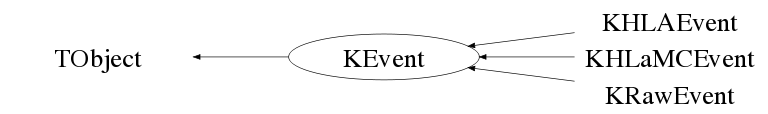

class KEvent: public TObject
KEvent.cxx KDataStructure Author: Adam Cox <mailto:adam.cox@ik.fzk.de> on 3/3/10. * Copyright 2010 Karlsruhe Institute of Technology. All rights reserved. This is the "mother" of all KDS Event classes. It contains some basic event parameters. Most importantly, however, is that many analysis objects can exploit C++ polymorphism by writing code that pass a pointer of this type (instead of a pointer to KHLAEvent or KRawEvent) and then handling the event pointer appropriately using dynamic casting.
Function Members (Methods)
public:
| KEvent() | |
| KEvent(const KEvent& anEvent) | |
| virtual | ~KEvent() |
| void | TObject::AbstractMethod(const char* method) const |
| virtual void | TObject::AppendPad(Option_t* option = "") |
| virtual void | TObject::Browse(TBrowser* b) |
| static TClass* | Class() |
| virtual const char* | TObject::ClassName() const |
| virtual void | Clear(Option_t* option = "C") |
| virtual TObject* | TObject::Clone(const char* newname = "") const |
| virtual void | Compact() |
| virtual Int_t | TObject::Compare(const TObject* obj) const |
| virtual void | TObject::Copy(TObject& object) const |
| virtual void | TObject::Delete(Option_t* option = "")MENU |
| virtual Int_t | TObject::DistancetoPrimitive(Int_t px, Int_t py) |
| virtual void | TObject::Draw(Option_t* option = "") |
| virtual void | TObject::DrawClass() constMENU |
| virtual TObject* | TObject::DrawClone(Option_t* option = "") constMENU |
| virtual void | TObject::Dump() constMENU |
| virtual void | TObject::Error(const char* method, const char* msgfmt) const |
| virtual void | TObject::Execute(const char* method, const char* params, Int_t* error = 0) |
| virtual void | TObject::Execute(TMethod* method, TObjArray* params, Int_t* error = 0) |
| virtual void | TObject::ExecuteEvent(Int_t event, Int_t px, Int_t py) |
| virtual void | TObject::Fatal(const char* method, const char* msgfmt) const |
| virtual TObject* | TObject::FindObject(const char* name) const |
| virtual TObject* | TObject::FindObject(const TObject* obj) const |
| virtual Option_t* | TObject::GetDrawOption() const |
| static Long_t | TObject::GetDtorOnly() |
| Double_t | GetEventTriggerTime() const |
| UInt_t | GetGSEventNumber() const |
| virtual const char* | TObject::GetIconName() const |
| virtual const char* | TObject::GetName() const |
| virtual char* | TObject::GetObjectInfo(Int_t px, Int_t py) const |
| static Bool_t | TObject::GetObjectStat() |
| virtual Option_t* | TObject::GetOption() const |
| Double_t | GetRunEndTime() const |
| Int_t | GetRunNumber() const |
| Double_t | GetRunStartTime() const |
| Double_t | GetSecPerStamp() const |
| Long64_t | GetStamp() const |
| Double_t | GetStampTime() const |
| virtual const char* | TObject::GetTitle() const |
| Int_t | GetTriggerType() const |
| virtual UInt_t | TObject::GetUniqueID() const |
| virtual Bool_t | TObject::HandleTimer(TTimer* timer) |
| virtual ULong_t | TObject::Hash() const |
| virtual void | TObject::Info(const char* method, const char* msgfmt) const |
| virtual Bool_t | TObject::InheritsFrom(const char* classname) const |
| virtual Bool_t | TObject::InheritsFrom(const TClass* cl) const |
| virtual void | TObject::Inspect() constMENU |
| void | TObject::InvertBit(UInt_t f) |
| virtual TClass* | IsA() const |
| Bool_t | IsBlind() const |
| virtual Bool_t | TObject::IsEqual(const TObject* obj) const |
| virtual Bool_t | TObject::IsFolder() const |
| Bool_t | TObject::IsOnHeap() const |
| Bool_t | IsSame(const KEvent& anEvent, Bool_t bPrint = false) const |
| virtual Bool_t | TObject::IsSortable() const |
| Bool_t | TObject::IsZombie() const |
| virtual void | TObject::ls(Option_t* option = "") const |
| void | TObject::MayNotUse(const char* method) const |
| void | myPrintB() const |
| virtual Bool_t | TObject::Notify() |
| static void | TObject::operator delete(void* ptr) |
| static void | TObject::operator delete(void* ptr, void* vp) |
| static void | TObject::operator delete[](void* ptr) |
| static void | TObject::operator delete[](void* ptr, void* vp) |
| void* | TObject::operator new(size_t sz) |
| void* | TObject::operator new(size_t sz, void* vp) |
| void* | TObject::operator new[](size_t sz) |
| void* | TObject::operator new[](size_t sz, void* vp) |
| Bool_t | operator!=(const KEvent& anEvent) const |
| virtual KEvent& | operator=(const KEvent& anEvent) |
| Bool_t | operator==(const KEvent& anEvent) const |
| virtual void | TObject::Paint(Option_t* option = "") |
| virtual void | TObject::Pop() |
| virtual void | TObject::Print(Option_t* option = "") const |
| virtual Int_t | TObject::Read(const char* name) |
| virtual void | TObject::RecursiveRemove(TObject* obj) |
| void | TObject::ResetBit(UInt_t f) |
| virtual void | TObject::SaveAs(const char* filename = "", Option_t* option = "") constMENU |
| virtual void | TObject::SavePrimitive(basic_ostream<char,char_traits<char> >& out, Option_t* option = "") |
| void | TObject::SetBit(UInt_t f) |
| void | TObject::SetBit(UInt_t f, Bool_t set) |
| virtual void | TObject::SetDrawOption(Option_t* option = "")MENU |
| static void | TObject::SetDtorOnly(void* obj) |
| void | SetEventTriggerTime(Double_t aNum) |
| void | SetGSEventNumber(UInt_t aNum) |
| static void | TObject::SetObjectStat(Bool_t stat) |
| void | SetRunEndTime(Double_t aNum) |
| void | SetRunNumber(Int_t aNum) |
| void | SetRunStartTime(Double_t aNum) |
| void | SetStamp(Long64_t aStamp) |
| virtual void | TObject::SetUniqueID(UInt_t uid) |
| virtual void | ShowMembers(TMemberInspector& insp, char* parent) |
| virtual void | Streamer(TBuffer& b) |
| void | StreamerNVirtual(TBuffer& b) |
| virtual void | TObject::SysError(const char* method, const char* msgfmt) const |
| Bool_t | TObject::TestBit(UInt_t f) const |
| Int_t | TObject::TestBits(UInt_t f) const |
| virtual void | TObject::UseCurrentStyle() |
| virtual void | TObject::Warning(const char* method, const char* msgfmt) const |
| virtual Int_t | TObject::Write(const char* name = 0, Int_t option = 0, Int_t bufsize = 0) |
| virtual Int_t | TObject::Write(const char* name = 0, Int_t option = 0, Int_t bufsize = 0) const |
protected:
| void | AddTriggerType(Int_t aNum) |
| virtual void | TObject::DoError(int level, const char* location, const char* fmt, va_list va) const |
| void | TObject::MakeZombie() |
private:
| void | CopyLocalMembers(const KEvent& anEvent) |
| void | InitializeMembers() |
| void | SetTriggerType(Int_t aNum) |
Data Members
public:
| enum TObject::EStatusBits { | kCanDelete | |
| kMustCleanup | ||
| kObjInCanvas | ||
| kIsReferenced | ||
| kHasUUID | ||
| kCannotPick | ||
| kNoContextMenu | ||
| kInvalidObject | ||
| }; | ||
| enum TObject::[unnamed] { | kIsOnHeap | |
| kNotDeleted | ||
| kZombie | ||
| kBitMask | ||
| kSingleKey | ||
| kOverwrite | ||
| kWriteDelete | ||
| }; |
private:
| Double_t | fEventTriggerTime | trigger time of the event according to the PC time. This value is ambiguous and redundant! However, the ambiguity/redundancy will go away if/when the data comes from the IPE DAQ. |
| Int_t | fGSEventNumber | Global Software Event Number. starts from 1 with each new Run |
| Double_t | fRunEndTime | end of the Big Run |
| Int_t | fRunNumber | big Run number. the small run number is found in the Bolometer data record |
| Double_t | fRunStartTime | begining of the Big Run |
| Long64_t | fStamp | the Opera clock value for this event. |
| Int_t | fTriggerType | 0x1 for Bolo event, 0x2 for Muon System, 0x4 if NC counter, 0x8 for next system, etc... |
Class Charts
{kind=link}
{kind=link}
{kind=link}
{kind=link}

Function documentation
void CopyLocalMembers(const KEvent& anEvent)
~KEvent(void)
void InitializeMembers(void)
WARNING - THIS METHOD SHOULD NEVER ALLOCATE SPACE FOR POINTERS ONLY SET MEMBERS ON THE STACK TO THEIR INITIAL VALUES
Bool_t operator==(const KEvent& anEvent) const
returns true of both events are EXACTLY the same this is most useful as a test of the copy constructors
Bool_t IsSame(const KEvent& anEvent, Bool_t bPrint = false) const
same as operator==, but with the option to print out whenever it finds a difference.
Double_t GetSecPerStamp(void)
returns the number of seconds that each Opera stamp spans. Currently, each stamp value is 10 microseconds long.
Double_t GetStampTime(void)
returns the stamp time in seconds. return GetSecPerStamp() * GetStamp();
void myPrintB() const
prints out a number of data member variables to std out. this method needs some work.
UInt_t GetGSEventNumber(void)
Int_t GetDetectorStatusWord(void) const {return fDetectorStatusWord;} Int_t GetBlindnessWord(void) const {return fBlindnessWord;}
{return fGSEventNumber;}void SetRunEndTime(Double_t aNum)
void SetTimeSinceLastEvent(Double_t aNum) {fTimeSinceLastEvent = aNum;} void SetDataType(Int_t aNum) {fDataType = aNum;}
{fRunEndTime = aNum;}void SetGSEventNumber(UInt_t aNum)
void SetDetectorStatusWord(Int_t aNum) {fDetectorStatusWord = aNum;} void SetBlindnessWord(Int_t aNum) {fBlindnessWord = aNum;}
{fGSEventNumber = aNum;}